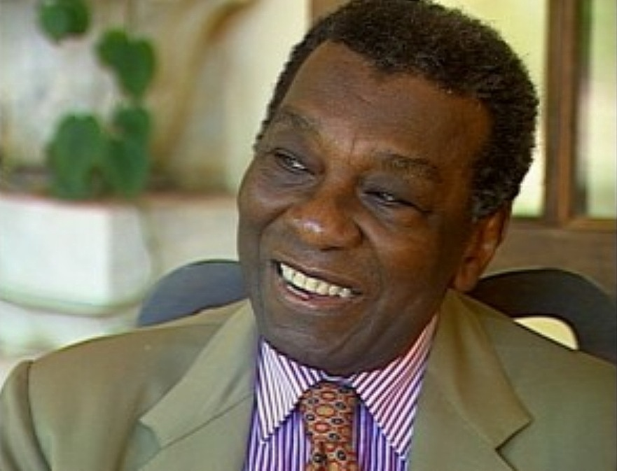

Exposição Consciência Negra
Ciência, Educação e Literatura

Milton Santos
(Brotas de Macaúbas, Bahia, 1926–2001)
Nascido em Brotas de Macaúbas, iniciou sua trajetória como professor ainda na década de 1940 e revolucionou a geografia crítica mundial. Foi o único cientista fora do eixo anglo-saxão a vencer o Prêmio Vautrin Lud, considerado o Nobel da Geografia.
Obras e Projetos de Destaque
- Obras Teóricas Fundamentais: Autor de livros de repercussão planetária como Por uma Outra Globalização: do pensamento único à consciência universal (2000), A Natureza do Espaço (1996), O Espaço Cidadão (1987) e O Espaço Dividido (1979).
- Teoria dos Dois Circuitos da Economia Urbana: Formulou a tese revolucionária sobre a coexistência do circuito superior (tecnológico/financeiro) e do circuito inferior (popular/informal) nas metrópoles dos países em desenvolvimento.
- Prêmio Vautrin Lud (1994): Maior distinção científica mundial na área de Geografia, concedida na França, consagrando seu método inovador de análise do "território usado".
- Documentário e Pensamento Crítico: Seu legado orientou o premiado documentário Encontro com Milton Santos ou O Mundo Global Visto do Lado de Cá (2006, de Silvio Tendler), referência no ensino médio e superior.